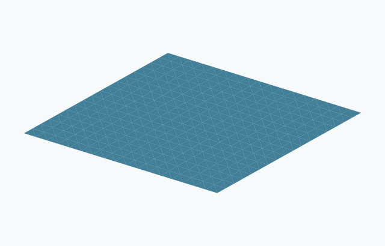

Thus $P$ is both a stationary flow and a normalized self-shrinker. An affine plane is a shrinker centered at any point of that plane; it satisfies the centered equation at the origin only if it contains the origin.
The inclusion is complete, proper, embedded, flat, noncompact and boundaryless, with topology $\mathbb R^ n$ and Euclidean volume growth. It has two ends for $n=1$ and one end for $n\geq 2$.
The solution has no finite singular time. The identity $\sqrt{-t}\, P=P$ does not describe a geometric collapse. Its entropy is exactly one.
In codimension one it is entropy stable and $F$-stable under the notions in [CM12]; no conclusion about a different constrained variation problem is intended.
The picture shows a bounded patch of a plane in $\mathbb R^3$. Its boundary is a viewing boundary, not a boundary of the flow.

Drag to rotate. Use the zoom buttons, or focus the drawing and use arrow keys and + / −.
Exact formula. A finite viewing patch of a plane through the origin. Its visible boundary is not part of the complete solution. Open drawingAmbient space, topology, embeddedness and entropyLines in ℝᴺ, N ≥ 2 · Euclidean plane ℝ²; Euclidean space ℝ³; Euclidean space ℝ⁴; Euclidean dimension ≥ 5 · Embedded
Ambient space
Euclidean plane ℝ²; Euclidean space ℝ³; Euclidean space ℝ⁴; Euclidean dimension ≥ 5
Topology
Line ℝ
Embeddedness
Embedded: The linear-subspace inclusion is an embedding.
Compactness
Noncompact
Surface genus
Not a surface
Topological ends
2
Entropy
Exact formula: λ = 1.
Gaussian area
Exact formula: F₀,₁ = λ for the normalized shrinker. λ = 1.
Planes in ℝᴺ, N ≥ 3 · Euclidean space ℝ³; Euclidean space ℝ⁴; Euclidean dimension ≥ 5 · Embedded
Ambient space
Euclidean space ℝ³; Euclidean space ℝ⁴; Euclidean dimension ≥ 5
Topology
Plane ℝ²
Embeddedness
Embedded: The linear-subspace inclusion is an embedding.
Compactness
Noncompact
Surface genus
0
Topological ends
1
Entropy
Exact formula: λ = 1.
Gaussian area
Exact formula: F₀,₁ = λ for the normalized shrinker. λ = 1.

Comments
Comments are not enabled yet.